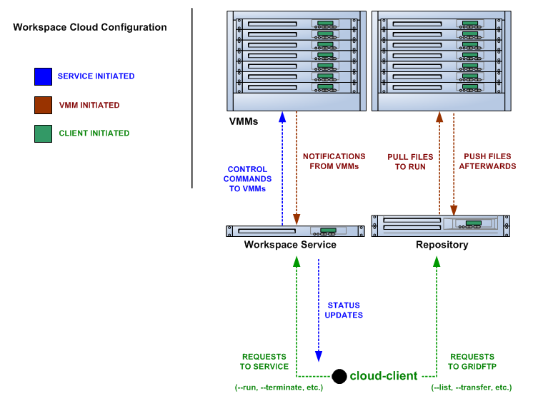

What is Nimbus? _NAMELINK(nimbus)
Nimbus is a set of open source tools that together provide an "Infrastructure-as-a-Service" (IaaS) cloud computing solution. Our mission is to evolve the infrastructure with emphasis on the needs of science, but many non-scientific use cases are supported as well.
Nimbus allows a client to lease remote resources by deploying virtual machines (VMs) on those resources and configuring them to represent an environment desired by the user.
It was formerly known as the "Virtual Workspace Service" (VWS) but the "workspace service" is technically just one the components in the software collection.
What is the main way to deploy Nimbus? _NAMELINK(cloudkit)
Options aren't always a good thing, especially to start with. The main way to deploy Nimbus is the cloud configuration. This involves hosting a site manager service and creating an image repository (see the Zero To Cloud guide for details). You direct your new users to use the cloud client which gets them up and running in just a few minutes.
Overview of the cloud configuration:
Is Nimbus hard to install? _NAMELINK(install)
Nimbus itself is not hard to install, it has a script driven install that asks you two questions.
Nimbus requires that some dependencies are installed first. On the service node: Java, Python, and bash. On the hypervisor nodes: Python, bash, ebtables, libvirt and KVM or Xen.
All of these things are installable via the package management system of all the popular Linux distributions.
See the Zero To Cloud guide for details including detailed prerequisite information.
What are the main Nimbus components? _NAMELINK(nimbus-main-components)
The Workspace Service site manager
A WSRF based remote protocol implementation
An EC2 based remote protocol implementation of their SOAP and Query APIs (partial)
Cumulus is an open source implementation of the Amazon S3 REST API. It is used as the Nimbus repository solution and can also be installed standalone.
The RM API bridge between remote protocols/security and specific site manager implementations.
The cloud client aims to get users up and running in minutes with instance launches and one-click clusters.
The reference client exposes the entire feature set in the WSRF protocol as a commandline client (with underlying Java client library). For advanced uses, scripting, portal integration, etc.
The Workspace Pilot allows you to integrate VMs with resources already configured to manage jobs (i.e., already using a batch scheduler like PBS).
The workspace-control agent implements VMM and network specific tasks on each hypervisor.
The Context Broker allows clients to coordinate large virtual cluster launches automatically and repeatably.
The Context Agent lives on VMs and interacts with the Context Broker at VM boot.
The components are lightweight and self-contained so that they can be selected and composed in a variety of ways. For example, using the workspace service with the pilot will enable a different cluster integration strategy. You can mix and match protocol implementations with the "pure Java" resource management module.
Writing new components should be a matter of "dropping" them in. As explained in "What is the RM API?", the Java side of things is particularly LEGO® like. As of Nimbus 2.3 workspace-control (the VMM component) is modularized with around 10 plugin points. And we are working towards modularizing even more and providing better implementations for various components.
Any questions, suggestions, and requirements in this area are appreciated.
What is the Workspace Service? _NAMELINK(workspace-service)
The Workspace service is a standalone site VM manager that different remote protocol frontends can invoke.
The current supported protocols are Web Services based or HTTP based. They all run in either an Apache Axis based Java container or Apache CXF. But there is only a certain level of necessity:
There is nothing specific to web services based remote protocols in the workspace service implementation, the messaging system just needs to be able to speak to Java based libraries.
Workspace service dependencies have nothing to do with what container it is running in, they are normal Java application dependencies like Spring, ehcache, backport-util-concurrent, and JDBC (currently using the embedded Derby database).
What is the WSRF frontend? _NAMELINK(wsrf-frontend)
This is the protocol implementation in longstanding use by previous workspace services and clients including the popular cloud-client.
This is an implementation of two of the Amazon Elastic Compute Cloud (EC2) interfaces that allow you to use clients developed for the real EC2 system against Nimbus based clouds.
There is support for both EC2 interfaces: SOAP and Query.
What EC2 operations are supported? _NAMELINK(ec2-messaging)
(See What is the EC2 frontend?)
Nimbus provides a partial protocol implementation of EC2's WSDL (namespace http://ec2.amazonaws.com/doc/2009-08-15/, a previous version supported 2008-05-05) and the Query API complement to that WSDL. The operations behind these EC2 commandline clients are currently provided:
ec2-describe-images - See what images in your personal cloud directory you can run.
ec2-run-instances - Run images that are in your personal cloud directory.
ec2-describe-instances - Report on currently running instances.
ec2-terminate-instances - Destroy currently running instances.
ec2-reboot-instances - Reboot currently running instances.
ec2-add-keypair [*] - Add personal SSH public key that can be installed for root SSH logins
ec2-delete-keypair - Delete keypair mapping.
[*] - There are two options for add-keypair implementations that can be chosen by the administrator in the conf file:
One is the normal implementation where the server-side generates a private and public key (using jsch) and delivers the private key to you.
The other (configured by default) is a break from the regular semantics. It allows the keypair "name" you send in the request to be the name AND the public key value. This means there is never a private key server-side and also that you can use keys you aready have created on your system. (In a sense, this is add-keypair as opposed to the normal behavior which should perhaps be named create-keypair).
What is the metadata server? _NAMELINK(metadata-server)
The metadata server responds to HTTP queries from VMs, using the same path names as the EC2 metadata server
The URL for this is obtained by looking at '/var/nimbus-metadata-server-url' on the VM, which is an optional customization task injected by the Nimbus service on your behalf (we are considering trying to simulate Amazon's hardcoded IP address "169.254.169.254" on any subnet, feedback on this idea is appreciated).
Like on EC2, its responses are based on the source IP address from the TCP packet, giving the information specific to each VM instance. This also means there is an assumption that the immediately local network is non-spoofable. Administrators, you should also put in place a firewall rule that restricts this port to the VMs only, just in case.
The metadata server is disabled by default, consult your administrator (or try a query from inside your VM).
Administrators, see "services/etc/nimbus/workspace-service/metadata.conf" for the details.
What metadata server fields are supported? _NAMELINK(metadata-fields)
(See What is the metadata server?)
Nimbus provides a partial implementation of EC2's version of the metadata server (their full field listing). These fields are currently supported:
user-data - "opaque" information injected by the client at launch time
meta-data/ami-id - the ami-id assigned to this image. This is simulated by the EC2 protocols in Nimbus, the "definitive" piece of information for a launch is really the filename in the repository, there is not AMI registry like on EC2.
meta-data/ami-launch-index - if this VM instance was launched as part of a group (cluster), it might have a launch index other than zero. This differentiates it from other homogenous nodes in the launch.
meta-data/local-hostname - the 'private' hostname of this VM [1]
meta-data/local-ipv4 - the 'private' IP of this VM [1]
meta-data/public-ipv4 - the 'public' hostname of this VM [1]
meta-data/public-ipv4 - the 'public' IP of this VM [1]
[1] - What 'public' and 'private' mean in this context is up to an administrator configuration. The VM also may or may not have two NICs on it, the values of these fields might be equal or not.
What is the cloud client? _NAMELINK(cloud-client)
The cloud client aims to get users up and running in minutes with instance launches and one-click clusters, even from laptops, NATs, etc. See the cloud client quickstart and cluster quickstart to see what it can do.
What is the reference client? _NAMELINK(reference-client)
The reference client exposes all features of the WSRF frontend as a commandline client. It is relatively complex to use and thus typically wrapped by task-specific scripts.
Internally, it's implemented around a base Java client API suitable for portal integration or any programmatic usage. Docs on this API are forthcoming but if you are interested check out org.globus.workspace.client_core in the client source tree (contains Javadoc comments and also consult example usages in the org.globus.workspace.client.modes package).
What is the Workspace Pilot? _NAMELINK(wpilot)
The pilot is a program the service will submit to a local site resource manager (LRM) in order to obtain time on the VMM nodes. When not allocated to the workspace service, these nodes will be used for jobs as normal (the jobs run in normal system accounts in Xen domain 0 with no guest VMs running).
Several extra safeguards have been added to make sure the node is returned from VM hosting mode at the proper time, including support for:
Also included is a one-command "kill 9" facility for administrators as a "worst case scenario" contingency.
Using the pilot is optional. By default the service does not operate with it, the service instead directly manages the nodes it is configured to manage.
What is the RM API? _NAMELINK(rm-api)
Most things having to do with the Java server side components are very flexible, featuring an extensibility system that allows for customization and replacement at runtime of various behaviors. By employing the Spring framework's "Dependency Injection" system, the Java components are virtually like LEGO® blocks.
One of the very strong internal interfaces here is the site resource management module which allows the remote security and protocol implementations and semantics to be separate from one consistent set of management operations. The implementing module governs how and when callers get VMs, it assigns resources to use, and takes them away at the appropriate times, etc.
What is workspace-control? _NAMELINK(wcontrol)
Program installed on each VMM node used to (1) to start, stop and pause VMs, (2) implement VM image reconstruction and management, (3) securely connect the VMs to the network, and (4) to deliver contextualization information (see Context Broker).
Currently, the workspace control tools work with Xen and KVM.
Implemented in Python in order to be portable and easy to install. Requires libvirt, sudo, ebtables, and a DHCP server library.
What is the Context Broker? _NAMELINK(ctxbroker)
This is a service that allows clients to coordinate large virtual cluster launches automatically and repeatably.
Used to deploy "one-click" virtual clusters that function right after launch as opposed to launching a set of "unconnected" virtual machines like most VM-on-demand services give you. It also provides a facility to "personalize" VMs (seed them with secrets, access policies, and just-in-time configurations). This requires that the VMs run a lightweight script at boot time called the Context Agent.
This is a user-oriented system that runs as an "overlay" on top of the normal VM-on-demand mechanics. It's been used on top of Nimbus clouds as well as with EC2 resources.
See the one-click clusters guide for more detail and the one-click cluster example to show just one of the many things this can be used to accomplish.
What is the Context Agent? _NAMELINK(ctxagent)
A lightweight agent on each VM -- its only dependencies are Python and the ubiquitous curl program -- securely contacts the context broker using a secret key. This key was created on the fly and seeded inside the instance. This agent gets information concerning the cluster from the context broker and then causes last minute changes inside the image to adapt to the environment.
See What is the Context Broker? Download it from this one-click clusters guide section.
What is Nimbus Web? (#)
Nimbus Web is the evolving web interface for Nimbus. Its aim is to provide administrative and user functions in a friendly interface.
Nimbus Web is centered around a Python Django web application that is intended to be deployable completely separate from the Nimbus service. Instructions for configuring and starting the application are in this section of the administrator guide.
Existing features:
Forthcoming features:
What is Cumulus? _NAMELINK(cumulus)
Cumulus is an open source implementation of the S3 REST API. Some features such as versioning and COPY are not yet implemented, but some additional features are added, such as file system usage quotas.
What clients can I use with Cumulus? _NAMELINK(cumulusclients)
Cumulus is compliant with the S3 REST network API, therefore clients that work against the S3 REST API should work with Cumulus. Some of the more popular ones are boto and s3cmd.
How are Nimbus and Cumulus related? _NAMELINK(cumulusnimbus)
Cumulus is the front end to the Nimbus VM image repository. In order to boot an image on a given Nimbus cloud, that image must first be put into that same clouds Cumulus repository (advanced use cases can by pass this).
Can Cumulus be installed without Nimbus? _NAMELINK(cumulusnonimbus)
Yes. Cumulus does not rely on any higher level Nimbus libraries and thus users who wish to install it as a stand alone front end to their storage system may do so.
Can Nimbus be installed without Cumulus? _NAMELINK(nimbusnocumulus)
No. Nimbus version 2.5 and higher is packaged with Cumulus and so Nimbus is intimately aware of Cumulus. Nimbus must be installed with the version of Cumulus with which it is packages.
Does the Nimbus IaaS system directly use Cumulus for image propagation? _NAMELINK(cumulusprop)
No. While Cumulus is the primary interface for transfer images in and out of the cloud, it is not the mechanism by which images are propagated from the repository to the virtual machine monitors. Propagation is done in a variety of different ways, many of which we are still developing and researching in order to find the best solution for scientific users.
How reliable is Cumulus? _NAMELINK(cumulusreliable)
The reliability of Cumulus depends entirely on the storage system that is backing it. In order to achieve S3 levels of reliability you need S3 levels of hardware investment but with our system even small providers can still be S3 protocol compliant while making an independent choice on cost/reliability.
What type of storage system backs the Cumulus repository? _NAMELINK(cumulusbackend)
In the first release of Cumulus we are only providing a posix filesystem backend storage system. However this is a very powerful plugin. It can be used against a variety of storage systems including PVFS, GFS, and HDFS (under a FUSE module). We have prototyped HDFS and BlobSeer plugins and we will be releasing them soon.
How is the software licensed? _NAMELINK(license)
Nimbus is licensed under the terms of the Apache License version 2.